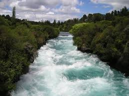
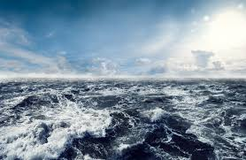
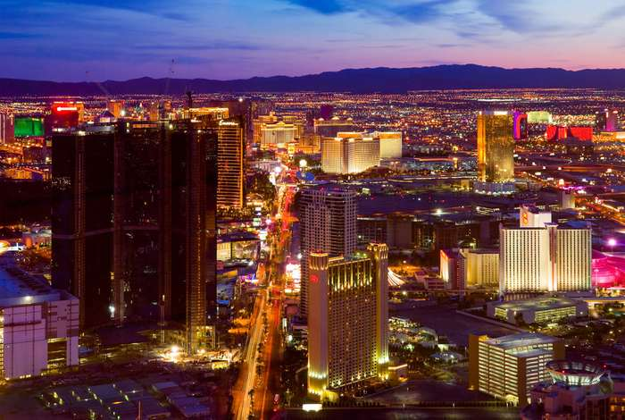

All the things surrounded us is known as environment.The environment can be defined as a sum total of all the living and non-living elements and their effects which influence human life.
For example the land, air and water, in which people, animals and plants live.The environment has a huge impact on an individual’s behaviour and intellect. Any change that occurs in a living entity either directly or indirectly is related to a change in his immediate surrounding.
There are two different types of environment:
It consists of all components provided by nature and hence can be called as the natural environment. It is also referred to as the physical environment as it pertains to the physical requirements of life. These physical or geographic conditions are not dependent on the existence of humans. Sometimes, humans have no control over the physical conditions of the environment. It includes natural resources, the earth’s surface, mountains, plains, land, water, deserts, storms, cyclones, volcanoes, oceans, climatic factors, and so on. It is also used to refer to biological situations such as complexities associated with plants and animals. The sustainability of the natural resources is known to contribute towards the economy of a country.
This environment is used to refer to the one created by man in order to regulate and monitor certain environmental conditions. Some address it as a social-cultural environment. It can further be divided into two types of environments.
It is a social environment and it exists as long as a particular society exists. It pertains to the regulations, traditions, organizations and institutions. It involves customs and folkways which is existent in every human group. It is addressed with names such as non-material culture, social heritage etc. This heritage is essential for the social life of humans to flourish, it is known to have an influence on an individual’s life. The altered form of the economic and physical environment – artificial environment, are seen as two different aspects of the man-made environment.
Through advancement in the field of science and technology, humans have attempted to alter conditions of their physical environment. This outer environment is as a result of these modifications which includes modern infrastructure in cities, our homes and their associated amenities, our modes of communication and transport, our resorts to conveniences and luxury, different kinds of industry manufacturing luxurious commodities, electrical appliances and so on which ultimately aims at civilization and urbanization.
Air is the invisible mixture of gases that surrounds the Earth. Air contains important substances, such as oxygen and nitrogen, that most species need to survive.Air is all around us, but we can't see it.
Water is an inorganic, transparent, tasteless, odorless, and nearly colorless chemical substance, which is the main constituent of Earth's hydrosphere and the fluids of all known living organisms. It is vital for all known forms of life, even though it provides no calories or organic nutrients.
Land, sometimes referred to as dry land, is the solid surface of Earth that is not permanently covered by water. The vast majority of human activity throughout history has occurred in land areas that support agriculture, habitat, and various natural resources.

A tree is a thing that is being made up of woods,leaves,stems,roots and branches.A tree is a tall plant with a trunk and branches made of wood.

A river is a natural flowing watercourse, usually freshwater, flowing towards an ocean, sea, lake or another river.A river is a ribbon-like body of water that flows downhill from the force of gravity. A river can be wide and deep, or shallow enough for a person to wade across.

An ocean is a body of water that composes much of a planet's hydrosphere. On Earth, an ocean is one of the major conventional divisions of the World Ocean. These are, in descending order by area, the Pacific, Atlantic, Indian, Southern, and Arctic Oceans.An ocean is a large area of water between continents.

Pollution is the introduction of harmful materials into the environment. These harmful materials are called pollutants. Pollutants can be natural, such as volcanic ash. They can also be created by human activity, such as trash or runoff produced by factories. Pollutants damage the quality of air, water, and land.
Air pollution refers to the release of harmful contaminants (chemicals, toxic gases, particulates, biological molecules, etc.) into the earth’s atmosphere. These contaminants are quite detrimental and in some cases, pose serious health issues.
Some causes that contribute to air pollution are:
Water pollution is said to occur when toxic pollutants and particulate matter are introduced into water bodies such as lakes, rivers and seas. These contaminants are generally introduced by human activities like improper sewage treatment and oil spills.
Other significant causes of water pollution include:

Soil pollution, also called soil contamination, refers to the degradation of land due to the presence of chemicals or other man-made substances in the soil.
Some of the common causes of soil pollution are:
Noise pollution refers to the excessive amount of noise in the surrounding that disrupts the natural balance. Usually, it is man-made, though certain natural calamities like volcanoes can contribute to noise pollution.Noise pollution, also known as environmental noise or sound pollution, is the propagation of noise with ranging impacts on the activity of human or animal life.
Noise pollution has several contributors, which include:
Light pollution, unwanted or excessive artificial light. Like noise pollution, light pollution is a form of waste energy that can cause adverse effects and degrade environmental quality.Light pollution adversely affects professional and amateur astronomers, as well as casual observers of the night sky, because it severely reduces the visibility of stars and other celestial objects

Thermal pollution is defined as a sudden increase or decrease in temperature of a natural body of water, which may be ocean, lake, river or pond by human influence. This normally occurs when a plant or facility takes in water from a natural resource and puts it back with an altered temperature.

The radioactive pollution is defined as the physical pollution of living organisms and their environment as a result of release of radioactive substances into the environment during nuclear explosions and testing of nuclear weapons, nuclear weapon production and decommissioning, mining of radioactive ores.